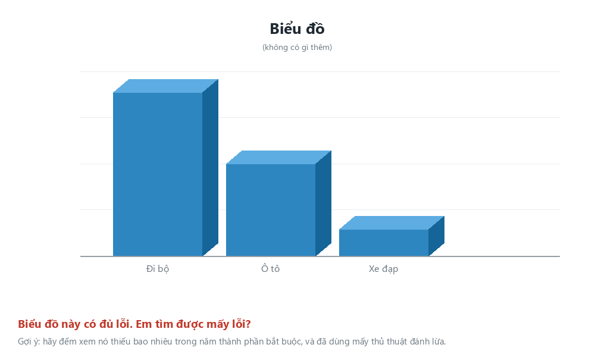

5 chặng. Nguyên tắc xuyên suốt: một biểu đồ = một bảng thống kê. Em lập bảng trước, vẽ biểu đồ sau — rồi tự tay làm một biểu đồ đánh lừa người xem, để lần sau gặp là nhận ra ngay.
0
Bắt đầu
Điền tên và lớp để nhận giấy chứng nhận khi làm xong.
Chuẩn bị
Mở file Lesson 4. LSTS_KhaoSat_K8_2026.xlsx tải trên Canvas. File có hai sheet:
Clean_Data chứa dữ liệu (hàng 3 → hàng 300) và BangThongKe đã kẻ sẵn các bảng trống để em điền. Quy tắc của cả buổi: một biểu đồ = một bảng thống kê. Excel không vẽ được biểu đồ từ 298 dòng dữ liệu thô —
em phải rút gọn thành một bảng vài dòng trước đã.
Ba bước cho mỗi biểu đồ: ① điền bảng thống kê ở sheet BangThongKe bằng công thức có điều kiện
→ ② bôi đen cả bảng, kể cả dòng tiêu đề → ③ Insert → chọn đúng loại biểu đồ.
1
Chọn đúng loại biểu đồ
Chọn theo câu hỏi em muốn trả lời, đừng chọn theo cái nào nhìn đẹp hơn.
Bốn câu hỏi dưới đây đều trả lời được từ bộ khảo sát khối 8. Mỗi câu hợp với một loại biểu đồ khác nhau. Chặng này chưa cần mở Excel — chỉ cần suy nghĩ.
Thử thách 1
So sánh điểm TB lớp 7 của 5 nhóm phương tiện đến trường
Bao nhiêu phần trăm cả khối chọn TikTok là mạng xã hội chính
Giờ ngủ của 293 bạn trải ra như thế nào, đông nhất ở khoảng nào
Giờ dùng thiết bị và điểm số có đi cùng nhau không
Vì sao cả bài hôm nay không dùng biểu đồ đường?
Xuất phát luôn là câu hỏi: đang so sánh các nhóm, đang xét một phần của tổng thể, đang xem các giá trị trải ra, hay đang xét quan hệ giữa hai biến số?
2
Biểu đồ cột và cái bẫy ở trục đứng
Chặng quan trọng nhất của cả bài.
Bước A — lập BẢNG 1 ở sheet BangThongKe. Bảng có 5 dòng (5 nhóm phương tiện) và 2 cột số: Số bạn đếm bằng COUNTIF trên cột I, Điểm TB lớp 7 tính bằng AVERAGEIF với điều kiện ở cột I và lấy điểm ở cột H. Bước B — vẽ biểu đồ cột. Bôi đen cả bảng vừa lập rồi Insert → Column Chart. Thêm đủ năm thành phần bắt buộc. Ba ô dưới đây lấy số từ chính bảng thống kê của em.
Xong ba ô số thì làm tiếp trên chính biểu đồ vừa vẽ: bấm chuột phải vào trục đứng → Format Axis → đổi ô Minimum từ 0 thành 7. Bảng số không đổi một chữ nào, nhưng hình thì đổi hẳn — nhìn kỹ rồi trả lời hai câu cuối.
Thử thách 2
Lập bảng ở sheet BangThongKe, vẽ biểu đồ, rồi chép số từ bảng thống kê của em sang đây.
Giá trị của cột cao nhất=AVERAGEIF(I3:I300;"Đi bộ";H3:H300)
Giá trị của cột thấp nhất=AVERAGEIF(I3:I300;"Xe buýt trường";H3:H300)
Cột cao nhất hơn cột thấp nhất bao nhiêu điểmLấy giá trị cột cao nhất trừ giá trị cột thấp nhất
Sau khi đổi Minimum thành 7, điều gì đã thay đổi?
Vậy khi nào cắt trục là chấp nhận được?
Muốn đọc giá trị từng cột cho dễ: Chart Elements → Data Labels để hiện số ngay trên đầu mỗi cột.
3
Biểu đồ tròn và giới hạn của nó
Loại biểu đồ hay bị dùng sai nhất.
Bước A — lập BẢNG 2 ở sheet BangThongKe. Bảng có 6 dòng (6 mạng xã hội) và 1 cột số: Số bạn đếm bằng COUNTIF trên cột J. Bước B — vẽ biểu đồ tròn. Bôi đen cả bảng rồi Insert → Pie Chart, sau đó bật nhãn phần trăm: Chart Elements → Data Labels → More Options → Percentage.
Thử thách 3
Lập bảng ở sheet BangThongKe, vẽ biểu đồ, rồi chép số từ bảng thống kê của em sang đây.
Có bao nhiêu nhóm khác nhau trong cột Mạng xã hộiĐếm số lát trên biểu đồ tròn của em
Bao nhiêu phần trăm chọn TikTokSố bạn chọn TikTok chia cho tổng số bạn trả lời câu hỏi đó
Bao nhiêu phần trăm chọn Không dùngCùng cách tính, đổi điều kiện thành "Không dùng"
Nhìn biểu đồ tròn vừa vẽ, lát Zalo và lát Instagram — lát nào lớn hơn?
Vậy khi nào nên dùng biểu đồ tròn?
Tổng số bạn trả lời câu hỏi mạng xã hội không phải là 300 — hãy đếm bằng hàm đếm ô có nội dung.
4
Cột phân phối và biểu đồ phân tán
Hai biểu đồ giúp em nhìn thấy tận mắt những gì đã tính bằng số ở Bài 2 và Bài 3.
Phần A — cột phân phối. Lập BẢNG 3 ở sheet BangThongKe: 6 dòng, mỗi dòng một khoảng giờ ngủ, cột số đếm bằng COUNTIFS với hai điều kiện trên cột B. Sáu khoảng đã ghi sẵn trong bảng: dưới 5 · 5 đến dưới 6 · 6 đến dưới 7 · 7 đến dưới 8 · 8 đến dưới 9 · từ 9 trở lên. Lập xong, bôi đen bảng rồi Insert → Column Chart.
Phần B — phân tán: ngoại lệ duy nhất, KHÔNG cần bảng thống kê. Biểu đồ phân tán giữ nguyên từng bạn thành một dấu chấm nên không gom nhóm được. Sang sheet Clean_Data, giữ phím Ctrl để bôi đen cột C (Giờ dùng thiết bị) và cột H (Điểm TB lớp 7), rồi Insert → Scatter.
Thử thách 4
Lập bảng ở sheet BangThongKe, vẽ biểu đồ, rồi chép số từ bảng thống kê của em sang đây.
Khoảng 7 đến dưới 8 giờ có bao nhiêu bạn=COUNTIFS(B3:B300;">=7";B3:B300;"<8")
Khoảng dưới 5 giờ có bao nhiêu bạn=COUNTIF(B3:B300;"<5")
Khoảng từ 9 giờ trở lên có bao nhiêu bạn=COUNTIF(B3:B300;">=9")
Biểu đồ cột phân phối của em có hình dạng thế nào?
Đám mây chấm ở biểu đồ phân tán nghiêng về phía nào?
Biểu đồ phân tán đó cho em kết luận được điều gì?
Chấm tản rộng là chuyện bình thường — xu hướng nói về cả đám đông chứ không nói về từng bạn một.
5
Biểu đồ trung thực
Nhìn một biểu đồ lạ và chỉ ra nó có đang đánh lừa mình hay không.
Một bạn vẽ biểu đồ dưới đây từ chính bộ dữ liệu khối 8. Dữ liệu không sai một con số nào. Hãy soát lại năm thành phần bắt buộc của một biểu đồ dễ đọc, rồi tìm tiếp ba thủ thuật làm biểu đồ đánh lừa người xem.

Thử thách 5
Chặng này chỉ cần nhìn hình phía trên, không phải vẽ gì thêm.
Có bao nhiêu trong năm thành phần bắt buộc KHÔNG đạt yêu cầuSoát lần lượt: tiêu đề · tên trục ngang · tên trục đứng kèm đơn vị · cỡ mẫu n · nguồn dữ liệu
Biểu đồ đó đã dùng bao nhiêu thủ thuật đánh lừaBa thủ thuật: cắt trục không ghi chú · bỏ bớt nhóm · hiệu ứng 3D
Vì sao chữ “Biểu đồ” ở trên cùng vẫn không tính là có tiêu đề?
Biểu đồ đó chỉ hiện 3 nhóm trong khi bộ dữ liệu có 5 nhóm. Đó là lỗi gì?
Điều nguy hiểm nhất của ba thủ thuật này là gì?
Đếm cho kỹ: một tiêu đề không nói gì thì vẫn tính là chưa đạt.
✓
Kiểm tra cuối bài
10 câu lấy ngẫu nhiên từ cả 5 chặng. Đúng từ 8/10 là nhận được giấy chứng nhận.